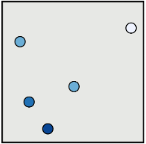
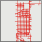
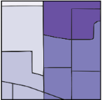
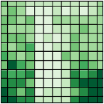

1 Getting Started


Getting Started with Geospatial Data Analysis in Environmental Health Using R
Date Modified: June 25, 2024
Authors: Mitchell Manware  , Lara P. Clark
, Lara P. Clark  , Kyle P. Messier
, Kyle P. Messier 
Key Terms: Environmental Health, Geospatial Data
Programming Language: R
1.1 Introduction
1.1.1 Motivation
Environmental health research relies on various types of data to accurately measure, model, and predict exposures. Environmental data are often spatial (related to the surface of the Earth), temporal (related to a specific time or period of time), or spatio-temporal (related to the surface of the Earth for a specific time or period of time). Here, the term geospatial will be used to refer to spatial and spatio-temporal data. These data are at the core of environmental health research, but the steps between identifying a geospatial data set or variable and using it to help answer a research question can be challenging.
1.1.2 Objectives
The objectives of this chapter are to:
- Introduce concepts and terminology used throughout the CHORDS Toolkit for geospatial data and geospatial analysis methods.
- Describe the geospatial datasets and
Rpackages used in the following tutorials. - Provide a list of useful resources for getting started with
Rand for further exploration of geospatial data analysis methods in environmental health.
The following chapters in this unit will demonstrate how to use R to access, prepare, and analyze different types of geospatial data that are commonly used in environmental health applications. The tutorials will focus primarily on spatial data, but some aspects of temporal and spatio-temporal data will also be discussed.
1.2 Concepts and Terminology
1.2.1 Spatial Geometry
The spatial geometry of a geospatial dataset is an important consideration in data analysis pipelines. There are three main spatial geometry types: point, line, and area (i.e., polygon or grid). Points are represented by geographic coordinates (latitude and longitude pairs), lines by a series of connected points, and polygons by a series of connected points that completely enclose and define an area. In contrast to polygons, which can define irregular or non-uniform areas, grids define regular and uniform areas (e.g., such that each grid cell has the same area). Point, line, and polygon data is referred to as vector data, and grid data is referred to as raster data. For detailed descriptions of vector data, raster data, and the differences between them, respectively, see (1), (2) and (3).
The following table illustrates common examples of each spatial geometry type used in environmental health applications.
| Type | Illustration | Examples | Tutorials |
|---|---|---|---|
| Point (Vector) |  | Air pollution monitors, Weather stations, Patient geocoded addresses, Healthcare facility coordinates | Point Data |
| Line (Vector) |  | Roads, Commute routes | |
| Polygon (Vector) |  | Wildfire smoke plumes, Census boundaries | Polygon Data |
| Grid (Raster) |  | Land cover imagery from satellites, Meteorological model output, Gridded population counts | Raster Data |
The tutorials linked in the table above demonstrate exploratory analyses with each spatial geometry data type.
1.2.2 Coordinate Reference Systems and Projections
Coordinate reference systems (CRS) are important for spatial analyses as they define how spatial data align with the Earth’s surface (4). Transforming (projecting) the data to a different CRS may be necessary when combining multiple datasets or creating visuals for particular areas of interest. It is important to note that transforming spatial data can cause distortions in its area, direction, distance, or shape (4). The direction and magnitude of these distortions vary depending on the chosen CRS, area of interest, and type of data (5). For guidance on selecting an appropriate CRS based on the data, area of interest, and analysis goals, see (6,7).
1.3 Datasets
The tutorials in this unit demonstrate the use of geospatial data using the following publicly available datasets:
| Data Provider | Dataset | Type |
|---|---|---|
| Environmental Protection Agency (EPA) | PM2.5 Daily Observations | Point |
| National Oceanic and Atmospheric Administration (NOAA) | Wildfire Smoke Plumes | Polygon |
| United States Census Bureau | United States Cartographic Boundary | Polygon |
| National Oceanic and Atmospheric Administration (NOAA) | Land Surface Temperature | Raster |
1.4 R Packages
The tutorials in this unit demonstrate the use of the following R packages:
The following code installs and imports the packages used in this unit:
Installing and importing new packages may required R to restart.
vignette_packages <- c(
"dplyr", "ggplot2", "ggpubr", "sf",
"terra", "tidyterra", "utils"
)
for (v in seq_along(vignette_packages)) {
if (vignette_packages[v] %in% installed.packages() == FALSE) {
install.packages(vignette_packages[v])
}
}
library(dplyr)
library(ggplot2)
library(ggpubr)
library(sf)
library(terra)
library(tidyterra)
library(utils)1.5 Resources
This section highlights resources for getting started with R, geospatial data analysis, and/or climate change and human health related research methods.
The BUSPH-HSPH Climate Change and Health Research Coordinating Center (CAFÉ) provides training and education materials for climate change and human health research in different formats for various types of users. The Climate CAFÉ Tutorials and Code Walkthroughs demonstrate geospatial data management and analysis in climate change and human health research using
R. CAFÉ also provides a series of video tutorials demonstrating the use of geographic information systems (GIS) in environmental health and a list of educational materials on climate and health.The inTelligence And Machine lEarning (TAME) Toolkit provides tutorials for data generation, management, and analysis in environmental health research using
R. The TAME Toolkit Chapter 1 includes a guide for installing and getting started withRand an introduction to data science methods inR. The TAME Toolkit also includes tutorials withRcode demonstrating geospatial data analysis methods in environmental health (e.g., Chapter 3.3).The IPUMS DHS Climate Change and Health Research Hub provides tutorials with code in
Rdemonstrating use of various climate and health datasets and analysis methods. IPUMS also provides a guide to installing and setting upRfor use in climate change and health research.The book Geocomputation with R provides resources for geospatial data analysis, visualization, and modeling with
R. This book provides tutorials and examples from various disciplines that use geospatial data (e.g., transportation, ecology). This book covers introductory through advanced topics.